Лучший проект в области генеративного AI
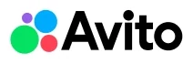
Авито
Собственное семейство LLM, которые легли в основу масштабного внедрения GenAI в сервисы Авито.
Финалисты
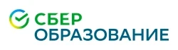
Ассистент преподавателя выдает рекомендации после анализа занятий, имеет конструктор витрин и ИИ-чат.
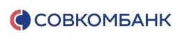
Sovcom-GPT — мультиагентная ИИ-платформа, объединяющая банковские системы через генеративный ИИ.
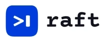
AI-ассистент Syngenta Cropwise для фермеров оказывает быстрые консультации и автоматизирует ключевые процессы.
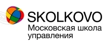
«Полка с играми» — проект, где Gen AI используется для создания бизнес-симуляций нового поколения.
Лучший стартап в области генеративного AI
target ai
target os — платформа для создания агентов, где суперагент Тай все сделает за вас.
Финалисты
АваКапо – это AI-платформа для генерации 3D-анимации персонажей по видео или тексту.
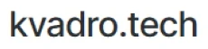
Первое решение для архитекторов, полностью автоматизирующее создание планировок для жилых домов.
Цифровая платформа для автоматизации предпроектной стадии в строительной отрасли.
Лучшая инхаус-разработка в области генеративного AI
Совкомбанк
ИИ-помощник в CRM автоматизирует аналитику и создает рекомендации для увеличения продаж в банке.
Финалисты
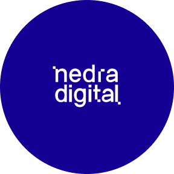
Решение на базе GenAI используется для ускоренного анализа аэрофотосъёмки в геологоразведке.
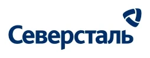
Ассистент «Чат-технолог» выступает в роли технического эксперта для действующих технологов компании
AppSec.CoPilot как второй пилот анализирует уязвимости в автоматическом режиме без участия AppSec-инженера
Лучший просветительский проект в сфере генеративного AI
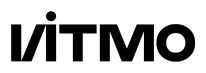
AI Talent Hub в ИТМО
AI Talent Hub в ИТМО — крупнейшая в России проектная магистратура и комьюнити в области ИИ.
Финалисты
LLM Arena: платформа для сравнения 60+ LLM на основе 65 000+ оценок пользователей.
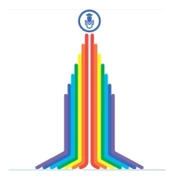
«ИИтоги будущего»: онлайн-пространство, где педагоги страны перестают бояться генеративного ИИ
Амбассадор GenAI-изменений
Дмитрий Ботов, ИТМО
Дмитрий Ботов — доцент в ИТМО, сооснователь AI Talent Hub, Data Science-партнёр в Napoleon IT.
Финалисты
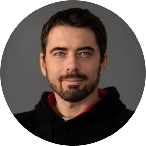
Кирилл Пшинник — сооснователь Университета Зерокодер, преподаватель ВШЭ, МФТИ, РАНХиГС и Иннополиса.
Мария Тихонова — кандидат комп.наук, руководитель направления AGI NLP в Сбере и доцент НИУ ВШЭ.
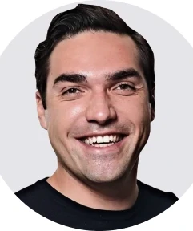
Павел Подкорытов — популяризатор GenAI в России, CEO Napoleon IT и сооснователь AI Talent Hub в ИТМО.
Лучшее GenAI-решение в клиентском сервисе
СберЗдоровье
AI-помощник по здоровью — единственный аккредитованный в России ассистент в медицине.
Финалисты
Сервис Авито Авто на базе собственной LLM A-Vibe для анализа готовности клиентов к покупке.
AI-Ассистент, который быстро отвечает на вопросы предпринимателей и решает рутинные задачи.
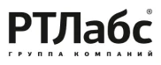
Робот Макс — цифровой помощник на Госуслугах, который только в 2024 году провел 1 млрд консультаций.
Лучшее GenAI-решение в маркетинге
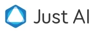
Just AI
Jay Flow — это рабочее место нового типа для тех, кто создает контент: тексты, видео, иллюстрации, идеи.
Финалисты
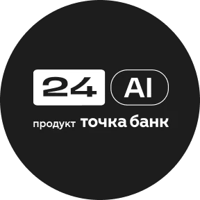
24AI от Точка банк — российский онлайн-сервис по созданию фото и инфографики для карточек товаров на маркетплейсах
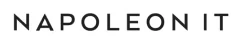
Napoleon IT Отзывы — это ИИ-платформа для создания аналитики, трендов и контента по клиентским отзывам.
AI-инструмент для автоматической проверки видимости филиалов на «Яндекс Картах».
Лучшее GenAI-решение в HR
ITQuick
Jumse — GenAI-платформа с ИИ-агентами для создания персональной модели грейдинга.
Финалисты
«Эксперт HR» — сервис для подбора и оценки специалистов на базе большой языковой модели.
Polina AI — ИИ-помощник для рекрутинга, который автоматизирует весь цикл подбора персонала.
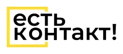
AI-агент для работы с кандидатами, который увеличил конверсию в найм в 2 раза.
Лучшее GenAI-решение для технической поддержки
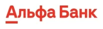
Альфа-Банк
RAG-помощник для операторов call-центра: генеративный поиск по базе знаний банка.
Финалисты
Автоматизация процесса проверки и экспертизы Локального этического комитета с помощью GenAI.
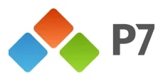
AI-бот для поддержки, который учился на базе знаний о продуктах Р7, теперь знает почти всё.
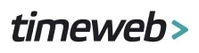
Бот для ответов поддержки в тикетах в сложном техническом продукте.